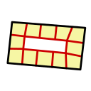
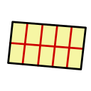

B. 土地形状
土地区画のポリゴン生成、分割、既存区画との重複処理、および路面辺の判定について。幾何処理はバックエンドの geo_parcels.py に集約され、Shapely による平面幾何の演算を前提とする。パスの形状についてはA_パス形状、建物のフットプリント生成にはC_建物形状、土地区画の経済的な意味づけは4_地区と土地区画とあわせて読む。
B.1. 何のための形状か
土地区画は、都市内のすべての建物および道路が立地するための地面の区画である。任意のポリゴンで表現され、そのポリゴンは建物のフットプリントの上限（建蔽率の分母）や、道路への接面判定、天然資源との重複判定など、経済シミュレーションやグラフィックの入力として利用される。
B.2. 土地区画が持つ幾何プロパティ
| プロパティ | プロパティ名 | 型 | 説明 |
|---|---|---|---|
| ポリゴン | polygon |
[[x, z], ...] |
土地区画の境界をなす2次元ポリゴンの頂点列。閉じた輪（末点が始点に一致する必要はない）。 |
| 中心点 | center_point |
[x, z] |
ポリゴンの重心（Shapely の centroid）。地区判定やR-tree空間インデックスのキーとして使われる。 |
| 面積 | area |
float | ポリゴンの面積。Shapely の Polygon.area で算出。 |
| 路面辺インデックス | facade_edge_index |
[int, ...] |
外周のうち道路に面している辺のインデックス列。建物形状の生成（C_建物形状）で正面の方向を決めるために使われる。 |
| 標高 | altitude |
float | 土地区画の基準標高（海面を0とする絶対標高、m）。接道（front_path_id の道路）があればその路面の標高、無ければ区画中心の地形標高（B.7）。パス・ノードの座標のYは地面からの相対高さなので基準が異なる。建物の接地に使うのは海上区画だけで、陸上の建物は中心点の地形標高に接地する（F_建物メッシュの生成 §2.4）。海上区画（PARCEL_WATER）は接道を持たないため、海面の 0.0 になる。 |
| 区画種別 | parcel_type |
int | 区画の物理的な種別。ポリゴンの位置から作成時に自動で決まり、自動判定で付くのは PARCEL_LAND（陸地）・PARCEL_SHORE（沿岸）・PARCEL_WATER（海上）の3種類。建てられる建物を左右する（B.5）。 |
B.3. 座標系の取り扱い
土地区画の座標は2次元平面 [x, z] で表現される。パスやノードは3次元座標 [x, y, z]（y は高さ）を持つが、土地区画の幾何計算では高さを無視し、(x, z) 平面で処理する。海岸線ポリゴンも同じ2次元平面上に定義される。
B.4. 区画の作成方法
B.4.1. 空き領域からの区画作成（レイキャスト法）
ユーザーが指定した地点を基点に、周囲の空き領域をポリゴン化して新しい土地区画を1つ作成する。get_empty_area で実装される。
- 基点を中心とした探索矩形（デフォルト110m四方）を設定する
- 矩形内の既存土地区画と道路の占有ポリゴンをR-treeで検索し、各々をわずかに膨張（等方スケールで約0.1m拡大）させた障害物ポリゴンとする
- 基点から360方向にレイを放射し、各レイが障害物または探索矩形の境界に最初に衝突した点を求める（レイキャスト）
- 360個の衝突点からなる粗いポリゴンを生成し、障害物を差し引く
- 基点を含む連結成分のみを残す
頂点の平滑化 — レイキャスト直後のポリゴンは360頂点で構成されており、冗長な頂点が多い。以下の処理を頂点数が収束するまで（最大10回）繰り返す。
- 鋭角頂点の除去 — 前後の辺のなす角が15度未満または345度を超える頂点を削除する
- 直線上頂点の除去 — なす角が175〜185度の頂点（ほぼ直線上にある頂点）を削除する
- 近接頂点のマージ — 連続する2頂点の距離が
NEAR_PARCEL_NODE_THRESHOLD未満の場合、基点から遠い方を削除する
最後に Shapely の simplify（Douglas-Peucker アルゴリズム）で指定許容値（デフォルト2m）まで簡略化する。
B.4.2. パス沿いの区画作成
既存のパス（道路）に沿って、指定した側に連続した台形区画を生成する。get_path_parcels で実装される。生成する側はパスの進行方向を基準にした left / right / both（両側）の3通りで、both は左右それぞれを独立した帯として生成したうえで、重なりの解消をまとめて1回行う。この3つ以外の値は左側へ倒さず入力エラーとして拒否する。
- パスの始点・ウェイポイント・終点から座標列を構築する
- 各セグメントの進行方向に対して、指定側（左右）の単位法線を計算する
- 折れ線パス（
curved=false）では、方向転換角が一定の角度（15°）を超える頂点を折れ点として帯を区切り、セグメントごとに独立した帯として区画を並べる。帯が折れの内側なら両方の道路に接する角地を1つ作り、外側なら区画を作らず楔形の隙間を残す（折れ点をまたいで法線を平均・補間すると、区画が道路に対して斜めの平行四辺形に引き伸ばされるため）。曲線パスは明確な折れ点を持たないので全長を1本の帯として扱い、頂点の法線を平均化して接合する - 各セグメントを指定された幅で等分割し、各分割区間の両端から法線方向に「道路半幅＋指定された奥行き」だけ伸ばした台形ポリゴンを生成する
生成された台形群からは、道路の占有ポリゴンと既存の土地区画が差し引かれる。区画の前面は実際の路肩に一致し、奥行きは道路中心ではなく路面際から測るため、同じ奥行きを指定すれば道路幅によらず同じ奥行きの区画になる。差し引きで生じた細い突起や、面積が閾値未満の小片は区画にせず破棄する。
クリック地点のまわりだけに区画を作るモードも、同じ分割格子から選ぶ。全長生成と同じ候補セル（角地も1つのセル）を列挙し、クリック地点を含むセルから中心が近い順に指定枚数（上限5枚。both では片側あたりの枚数）だけを採る。クリック地点を中心に「幅×枚数」の帯を置く方式は、隣に作った区画との間に半端な隙間が残って小片になるため採らない。同じ格子から選ぶので、道路沿いを何度クリックしても全長生成と同じ区画列に収束する。
B.4.3. 既存区画の分割
既存の土地区画を複数の小区画に分割する。元の区画は削除され、分割結果が新たな区画として登録される。geo_parcels.py に3つの分割アルゴリズムがある。
外周分割（subdivide_parcels）

外周に沿ってシード点を配置し、Voronoi 分割で区画を生成する。街区を区切るような自然な分割に向く。
- 目標区画数を総面積と目安面積から算出する
- 外周の凹頂点（内角が180度未満の頂点）をシードとして採用する
- 各辺を均等に区切る追加シードを外周上に配置する
- すべてのシードを重心方向にわずか（2m）内側にシフトする
- シードに対して Voronoi 分割を計算し、各 Voronoi セルを元のポリゴンで切り抜く
- Voronoi 分割で取りこぼされた領域があれば最大セルに吸収する
Voronoi の無限遠領域は、voronoi_finite_polygons_2d で有限ポリゴンに変換される。これは、無限に伸びる境界線をシード間の中点から十分遠い距離で打ち切る手法である。再構成した各セルの頂点は偏角順に並べ替える。並べ替えを欠くと境界セルが自己交差した星形ポリゴンになる。
矩形分割（get_rectangle_parcels）

最寄りの街路の方向を基準フレームとして、列×帯の格子状に分割する。規則的な街区割りに向く。
- 最寄り街路の中心線接線方向を主要軸とする（周辺に街路が無い場合のみ最小回転外接矩形の長辺方向にフォールバックする）。碁盤目ブロックのように複数の街路がほぼ等距離にあるときは、領域の長辺に最も平行な街路を優先し、探索順で主要軸が変わらないようにする
- 奥行き方向（主要軸に直交する方向）を、目安面積から求めた理想的な区画奥行きを持つ列へ分割する。奥行きの深い領域では列が3列以上になり、道路に面しない「内陸」の区画も生成される（列数を絞ると極端に細長い短冊状の区画ができてしまうため）
- 各列を主要軸方向に、面積が目安面積に近づくよう等分割する
- 各格子セルと元ポリゴンの共通部分を区画とする
矩形ランダム分割（get_rect_random_parcels）
矩形分割と同じ格子分割に、区画幅・列境界のゆらぎ（ジッター）を加えたもの。道路には整列するが区画幅・背割り位置が不揃いという、実際の旧市街の地割りに近い分割を生成する。乱数源を固定できるため、プレビューと確定で同じ形状が得られる。
B.4.4. ブロック一括の区画作成
クリック地点の周囲の道路を検出し、その街区に面する各道路沿いへ区画を並べる。create_parcel_block は get_empty_area による単一区画の形状生成を経由せず、get_block_parcels を直接呼ぶ。街区形状は生成範囲の制限であり、区画の間口方向は実道路の側面から決まる。
- 探索矩形と交差する道路占有ポリゴンをR-treeで取得し、矩形から差し引く。クリック地点を含む連結成分を対象街区にする。レイキャストを使わないため、L字などの凹街区でもクリック地点から見えない腕を含めて扱える。閉じていない道路配置では探索矩形が上限になる。
- 各道路の占有境界から対象街区に面する側面区間を抽出する。
_detect_block_frontagesは道路ID、左右、中心線上の区間、街区内側が左になる側面点列を保持する。生成元は稼働中かつpath_allows_frontageを満たす街路のみ。探索矩形の辺、道路の終端面、隣の街区の道路側面は生成元にしない。 - 側面を大きな折れ点で区切り、間口を弧長で等分して指定奥行きだけ内側へ伸ばす。曲線上の頂点を保つ法線オフセット処理は道路沿い作成と共通で、奥行きはどちらも道路際から測る。
- 角を共有する側面列を別グループに分け、長い通りを含むグループから生成する。後続の側面列は先行区画の帯を避けてから間口を等分する。向かい合う帯が競合する部分だけ、側面サンプルの最近傍領域によって概ね中間で背割りする。競合しない部分は領域制限をかけず、曲線外側などが有限ボロノイの外縁で欠けるのを防ぐ。生成済み区画との差集合で重複を防ぐ。
- 既存区画を差し引き、細い突起を除去したうえで生成元道路に2m以上面する単純ポリゴンだけを残す。穴のある形状は区画へ変換しない。20m²未満の小片は同じ通りの有効な隣接区画へ共有辺で統合できる場合だけ吸収し、残りは空地にする。既存区画は街区検出を遮らず、変更も削除もしない。
中央の余りは空地にする。道路が見つからない場合や有効な沿道区画が残らない場合は0件を返し、UIで探索範囲・区画寸法の調整を案内する。ランダム分割への自動切り替えは行わない。
設定は探索範囲（横・縦）、間口、奥行き、ばらつき。受け付ける範囲は探索範囲が縦横とも20〜400m、間口が4〜50m、奥行きが5〜100m、ばらつきが0〜0.5で、範囲外や有限でない値は拒否される。ばらつき0は均等な間口になり、正の値では間口にゆらぎを加える。乱数は入力から固定し、道路候補もID順に処理するため、都市の状態と入力が同じならプレビューと確定の形状が一致する。
新規作成ボタンは「道路沿い」「ブロック一括」「ランダム」「単一区画」の順。既存区画の矩形分割・ランダム分割は別グループで提供する。任意形状が必要な場合は単一区画を作成してから頂点を編集する。
B.5. 海岸線と区画種別
土地区画を作成する際、ポリゴン形状は海岸線でクリップされず、入力された形状がそのまま保持される。海岸線は区画種別（parcel_type）の判定にのみ使用し、形状を変形させない。
海岸線ポリゴンの取得
海岸線ポリゴンは新規都市の作成時にだけ、バックエンド（コアシミュレーター）の Terrain.compute_coastline_polygon() で初期地形から抽出され、city.terrains["coastline"] に GeoJSON ライクな dict 形式で格納される。以後は埋立の完了で埋立地の範囲が足されて広がり（D_地形形状 §D.17.4）、セーブデータにもそのまま保存される（ロードで抽出し直さない）。道路の盛土・切土や陸地の整地では変わらない。フロントエンドからは GET /api/v1/terrain/coastline で取得できる。海岸線は変わりうるので、フロントエンドは一度取得した値を使い続けず、session:reload のたびに取り直す。
レスポンス形式:
{
"type": "Polygon" | "MultiPolygon",
"coordinates": [...]
}
座標系はワールド座標（マップ中心が (0, 0)）。複数島がある場合は MultiPolygon となる。
区画種別の自動判定
区画種別（parcel_type）は土地区画の作成時に、ポリゴンの位置とその時点の海岸線から自動的に決まる。後から埋立で海岸線が広がっても、作成済みの区画の種別は変わらない。例外は、地形エディタでシナリオの標高・水面・川を保存したときで、海岸線を抽出し直したうえで、埋立地を除く全区画の種別を同じ規則で判定し直す（建設物の無いシナリオでだけ起きる。D_地形形状 §D.14.3）。プレイヤーやUIが種別を指定する操作は無く、APIにも指定する手段は無い（作成時に種別を渡すプロパティは無く、更新でも受け付けない）。種別を付け直すには区画を作り直す。
判定は次の順に行う。
- ポリゴンの外周が海岸線ポリゴンの外周に接する（=海岸線を跨ぐ）なら
PARCEL_SHORE（沿岸区画）。数値誤差対策として 0.5m 以内の近接も「接触」とみなす。陸地がマップ端で切られただけの辺（都市限界と重なる海岸線）は岸とみなさない。 - ポリゴンが海岸線ポリゴンに収まらない（=陸地の外）なら
PARCEL_WATER（海上区画）。 - いずれでもなければ
PARCEL_LAND（陸地区画）。
海岸線データを持たないマップでは判定材料が無いため、すべて PARCEL_LAND になる。都市限界の外へ出るポリゴンも PARCEL_LAND とする。海岸線は陸地をマップ矩形で切り取った形状なので、都市限界の外は「海」ではなく地形データの存在しない領域だからである。
海岸線ポリゴンは湖と川の範囲を穴として含む（D_地形形状 D.10.3・D.11.5）ため、湖面・川面の上に作られた区画も PARCEL_WATER になる。海上かどうかは陸地と重なる面積の割合で判定するので、湖を丸ごと囲む内陸の区画は陸地のままである。
区画種別と建物の立地
どの種別の区画に建てられるかは、建物バリアントごとにマスターデータ（agent_master の parcel_type）で決まる。指定の無いバリアントは陸地（PARCEL_LAND）を要求する。港湾施設は沿岸（PARCEL_SHORE）、洋上風力発電所や洋上石油プラットフォームといった海上構造物は海上（PARCEL_WATER）を要求する。要求する種別と区画の種別が一致しない組み合わせは物理的に成立せず、プレイヤーによる手動建設でも民間による自動建設でも同じ規則が適用される（4_地区と土地区画）。
海上区画の扱い
海上区画は海面の上に置かれる敷地で、陸地区画とは次の点が異なる。
- 接道を持たない。路面辺（
facade_edge_index）は空、接道（front_path_id）は未設定で、周辺の街路の探索自体を行わない。海上構造物はインフラパスで財を送り出すだけで、来訪も通勤もないためである。 - 基準標高（
altitude）が海面基準の0.0になる。接道による上書きが起きないので、この値がそのまま建物の接地面の高さになる（F_建物メッシュの生成 §2.4）。 - 建設難易度の元データである地形の平均勾配（
terrain_slope）が 0 固定になる。海底の起伏を建設コストに持ち込まない。海上構造物ごとの建設費の差はバリアントの建設コスト係数で表す。 - 横断パスの判定を行わず、「横断パスあり」（
has_crossing_path）は常に立たない（4_地区と土地区画 4.6）。海面下を這う海底ケーブル・海底パイプラインは、海面に建つ構造物の土地利用を妨げないためである。 - 所属地区は、道路から地区を継承できた区画のうち最も近いものから引き継ぐ（4_地区と土地区画）。ただし地区のポリゴン形状には寄与しない。地区の形は陸地側の区画と道路リボンだけで定義し、沖合の敷地まで地区が伸びないようにする。
B.6. 既存区画との重複処理
新しい土地区画を作成する際、既存の土地区画と重複する領域の処理が必要になる。handle_overlaps フラグが有効な場合、以下の処理が行われる。
- 新しいポリゴンと重複する既存区画をR-treeで検索する
- 各既存区画との差集合（
difference）を取ることで、重複部分を除外する - 差し引きの結果が MultiPolygon に分割された場合は、面積1m²以上の各ポリゴンを独立した土地区画として登録する
- すべて差し引かれて空になった場合は区画を作成しない
道路・線路（パス）は土地区画を持たず、土地区画の無い場所にのみ敷設できるため、この重複処理の対象外である。パスの占有範囲が既存の土地区画と重なる場合は、着工時に重なりの程度・所有者・建物の有無に応じて、区画の削除（収用）・重なり部分だけの削り取り（部分収用）・着工待機のいずれかになる。詳細は3_道路網の「着工時の土地区画との重なりの扱い」を参照。
B.7. 路面辺と接道の判定
土地区画の外周のうち、どの辺が道路に接しているか（路面辺 facade_edge_index）と、どの道路を接道（front_path_id）とするかを判定する。recalculate_facade_edge_index で実装される。路面辺は建物形状の生成（C_建物形状）において、どの辺を「正面」とするかを決めるために不可欠である。
路面辺と接道は異なる距離基準で判定される。
- 路面辺: 道路に物理的に接している辺だけを抽出するための厳しい基準。辺の中点と道路中心線の距離が「道路幅の半分＋数mの余裕」以下の辺のみが路面辺となる。判定点を辺の中点とするのは、道路沿い区画の側面の辺（道路と直交する辺）も端点は道路際に接しており、辺全体の最短距離では路面辺と誤判定されてしまうためである。
- 接道: 道路からやや離れた区画にも接道（＝所属地区の伝播経路。4_地区と土地区画）を保証するための緩い基準。いずれかの辺との最短距離が一定の閾値（100m）以内にある最も近い街路が接道となる。
判定アルゴリズム
- 土地区画のバウンディングボックスにマージンを加えた範囲で、R-treeにより周辺のパスを検索する
- 検索されたパスのうち街路（
PATH_STREET）だけを抽出し、3次ベジエ曲線をサンプリングした中心線LineStringに変換する（3次元座標は高さを無視して2次元に変換） - 土地区画の外周を各辺（
LineString）に分解する - 各辺の中点と道路中心線の距離が「道路幅の半分＋数mの余裕」以下の辺を「路面辺」として判定する
- いずれかの辺との最短距離が閾値（100m）以内で最も近い街路を接道とする
- 接道が定まったのに路面辺が1つも無い場合（道路からやや離れた区画）は、接道に最も近い辺1つを路面辺として補完する。これにより接道を持つ区画は必ず1つ以上の路面辺を持つ
複数の辺が路面辺になることがある（角地など）。閾値以内に街路が無い場合は facade_edge_index は空リスト、front_path_id は未設定となる。
基準標高（altitude）もこの判定で決め直す。接道があれば、接道道路の中心線上で最良辺（接道に最も近い辺）の中点に最も近い点の路面標高、接道が無ければ区画中心の地形標高で、いずれも海面基準の絶対標高である。道路の完成時など接道を解決し直すたびに更新されるので、着工時の造成で変わった路面の高さも反映される。
海上区画（PARCEL_WATER）はこの判定の対象外で、周辺の街路の探索自体を行わない。結果は常に路面辺なし・接道なしで、基準標高も接道で上書きされない（B.5）。
B.8. リソースとの紐付け
土地区画のポリゴンと重複する天然資源（鉱脈や油田など）を検索し、resource_id に {resource_type: resource_id} の辞書として設定する。R-treeで候補を絞り込んだのち、Shapely の intersects で実際の重複判定を行う。工業バリアントの立地倍率計算で参照される（4_地区と土地区画）。
B.9. 地区への自動所属
土地区画が作成または更新されると、中心点から所属する地区（ゾーン）が判定される。ポリゴンの変更時には、所属地区の再計算、建築規制（建蔽率・容積率・高さ制限・建築可能タイプ）の再反映が行われる。
B.10. 土地区画の削除
土地区画の削除には以下の制約がある。
- 建物が建っている（
usage_idがVALUE_NONE以外の）区画は、建物がSTATUS_EMPTYでない限り削除できない - 削除は市政府による収用であり、所有者が市政府以外なら市政府から所有者へ土地価格（
land_price）を収用補償として支払う（22_予算管理）。建物の残存価値は支払わない（STATUS_EMPTY以外の建物がある区画は削除できず、STATUS_EMPTYは解体済みで現物が無いため） STATUS_EMPTYの残骸建物があれば、区画とともに清算付きで削除される- 削除後に所属地区の
parcel_idsから当該区画を除外し、整合性を保つ